地政学
カブールは山岳国家の首都で、ヒンドゥークシュの峠道、パキスタン方面の回廊、中央アジアへの道を束ねます。政権、外交団、治安機関、援助機関が集まり、国内統治と周辺国の緊張が街路に映る場所です。今も重い街です。
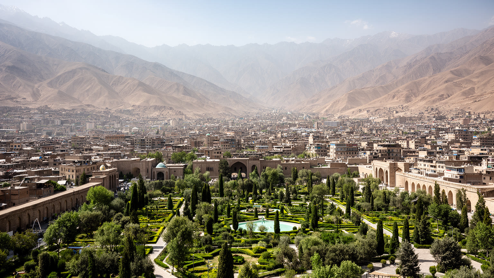
🇦🇫 アフガニスタン / アジア / World City Atlas
ヒンドゥークシュ山脈の谷に国家機能、戦争の記憶、市場、大学、モスク、難民帰還者の住宅地が重なる首都です。中央アジア、南アジア、イラン世界を結ぶ峠道の都市です。
都市の骨格
カブールは山に囲まれた盆地の都市です。谷を通る道路、川筋、バザール、官庁、大学、丘の住宅地が近接し、政治の変化と日々の商いが同じ狭い都市空間に集まります。
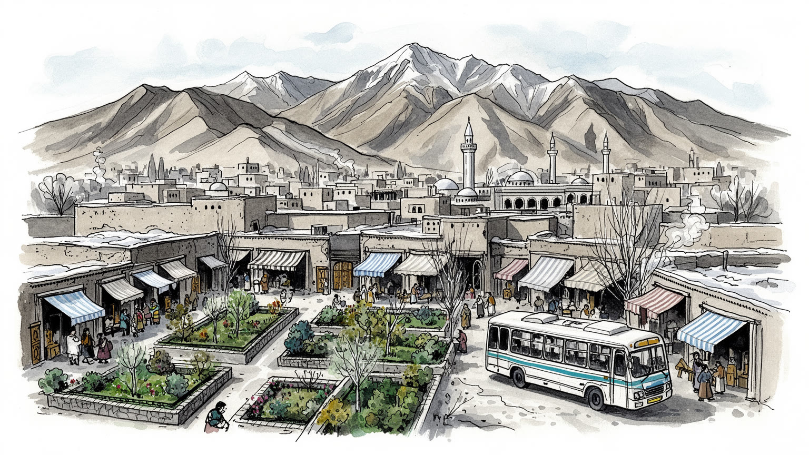
カブールは山岳国家の首都で、ヒンドゥークシュの峠道、パキスタン方面の回廊、中央アジアへの道を束ねます。政権、外交団、治安機関、援助機関が集まり、国内統治と周辺国の緊張が街路に映る場所です。今も重い街です。
雇用は行政、商業、建設、教育、医療、国際援助、輸送、小売、露店、工芸に支えられます。安定した仕事は少なく、送金、日雇い、家族経営が生活を補います。女性や若者の働く機会は政治と治安に大きく左右されます。
モスク、聖者廟、家庭の礼拝、詩、音楽、絨毯、茶、結婚式が都市文化を作ります。イスラムは法や政治だけでなく、弔い、慈善、近所づきあい、食卓の時間を結ぶ生活の語彙であり、多民族都市の記憶にも深い場所です。
バーブル庭園、丘の眺望、博物館、旧市街は魅力ですが、住民には水、電力、家賃、通学、医療、冬の寒さ、移動の安全が日々の条件になります。観光と生活は分けられず、回復の速度は暮らしの安心に表れる都市です。
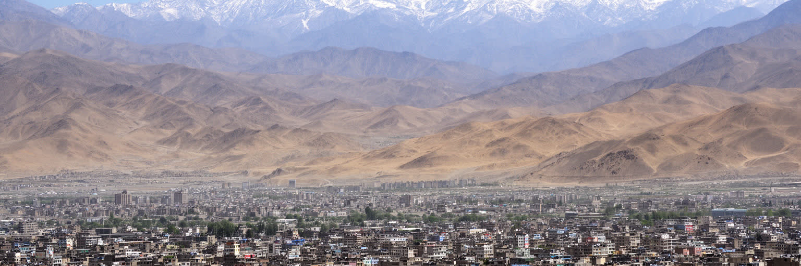
カブールの都市感覚は、まず周囲を囲む山から始まります。ヒンドゥークシュ山脈の支脈に抱かれた盆地に市街地が広がり、乾いた丘、谷を走る道路、季節によって表情を変える川筋が生活の輪郭を作ります。標高が高いため冬は冷え込み、雪が交通と燃料費を左右し、夏は乾燥した暑さと砂塵が街路を覆います。山は美しい背景であると同時に、都市の拡張を制限し、斜面の住宅、狭い道路、排水の弱さを生む条件でもあります。古い中心部、官庁、大学、バザール、丘の上の住宅地は近く見えても、移動は坂、渋滞、検問、道路状態に左右されます。峠道は国内の州都、パキスタン方面、中央アジア方面をつなぎ、首都へ人、物資、情報、不安を運びます。水は特に重要で、雪解け、井戸、給水車、老朽化した配管が家庭の生活を決めます。山岳地理を読むことは、絵葉書の眺望だけでなく、燃料、水、移動、住宅、災害リスクがどれほど地形に縛られているかを見ることです。カブールは広い平野の首都ではなく、限られた谷底に国家と市場と帰還者の生活が詰め込まれた都市です。谷の狭さは行政や商業を中心部へ集め、周縁の地区ほど公共サービスから遠くなります。雪解けの季節、乾いた夏、冬の煙は、地形が毎日の体感として戻ってくる時間であり、都市計画の課題でもあります。丘へ伸びる住宅の灯りは美しい一方、その背後には水道、道路、学校、診療所をどう届けるかという切実な問いが残ります。
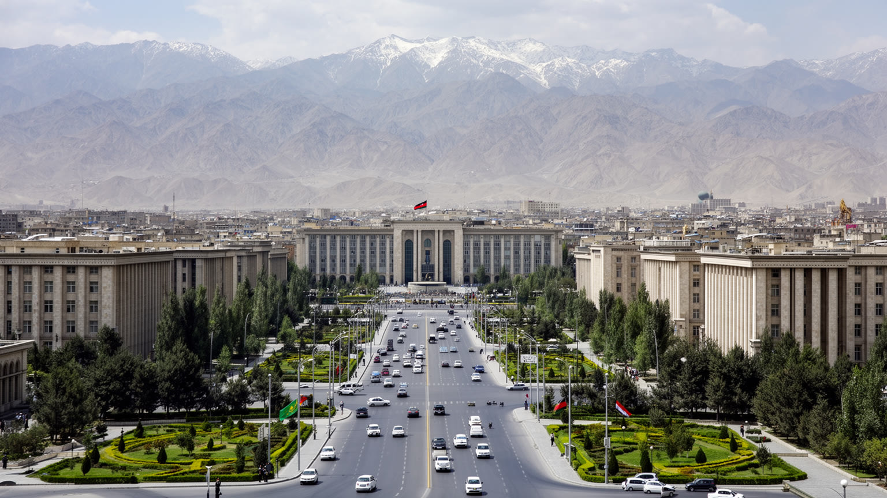
カブールはアフガニスタンの政治中枢であり、国家機関、治安組織、外交団、国際機関、報道、大学、宗教指導者の声が集中します。近代国家の建設、王政、共和国、社会主義政権、内戦、タリバン政権、外国軍の駐留と撤退、再びの政権交代は、すべて首都の建物と記憶に痕跡を残しました。政治は遠い制度ではなく、道路封鎖、検問、官庁前の行列、学校の開閉、女性の移動、メディアの沈黙や再編として日常に触れます。地方から来る陳情者、避難民、学生、商人にとって、カブールは機会の場所であると同時に、国家の不安定さを最も強く感じる場所でもあります。国際援助が集中した時期には、雇用、住宅価格、英語教育、ホテル、警備産業が膨らみ、撤退後には多くの仕事が失われました。首都政治を読む時、権力者の名前だけでは足りません。政策変更が誰の学校を止め、誰の職を奪い、誰の家族を国外へ向かわせるのかを見る必要があります。カブールの政治性は、国家の中心であることと、国家が十分に市民を守れない不安が同居する点にあります。大使館街や官庁周辺の警備は、国際政治が住民の移動へ直接重なることを示します。首都で暮らす人は、制度への期待と失望を毎日の通勤路で経験しています。首都が安定しない時、地方の行政、国境の商業、教育の継続まで揺らぎます。カブールの街路は、国家が社会と向き合う最前線でもあります。
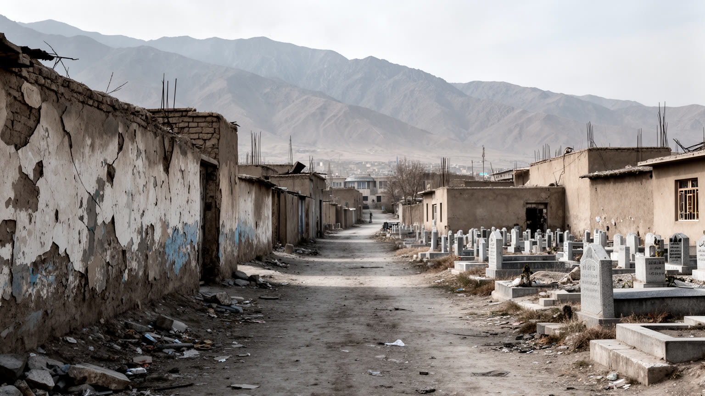
カブールの近現代は、戦争、政変、占領、内戦、爆発、避難、帰還の記憶と切り離せません。丘の斜面、道路沿いの壁、古い官庁、壊された住宅、墓地、閉じた学校、移転した大使館には、暴力が都市の使い方を変えてきた時間が刻まれています。戦争は建物を壊すだけでなく、人がどの道を選び、何時に帰り、誰に子どもを預け、どの地区を避けるかという判断を変えます。安全が少し戻っても、家族の喪失、国外へ散った親族、行方不明者、障害を負った人、教育を中断された世代の記憶は残ります。一方で、店を開けること、学校へ通うこと、結婚式を行うこと、茶を出すこと、庭園を手入れすることは、日常を取り戻す行為でもあります。カブールを危険の記号としてだけ見ると、住民が何度も生活を組み直してきた時間を見落とします。記憶は博物館や記念碑だけにあるのではありません。家庭の写真、亡命先からの送金、古い音楽、墓参り、修理された壁、再開した市場にも宿ります。戦争を読むことは悲劇を消費することではなく、都市がどのように傷を抱えたまま公共性を作り直そうとしているかを理解することです。世代によって記憶の濃さは違うが、沈黙や冗談、慎重な外出時間にも過去は残ります。復興の言葉は、失われた人の名前を忘れない努力と結びついて初めて意味を持ちます。記憶を共有する場が少ないほど、痛みは家庭の中へ閉じ込められます。都市の成熟には、語れる場所と静かに悼める場所の両方が必要です。
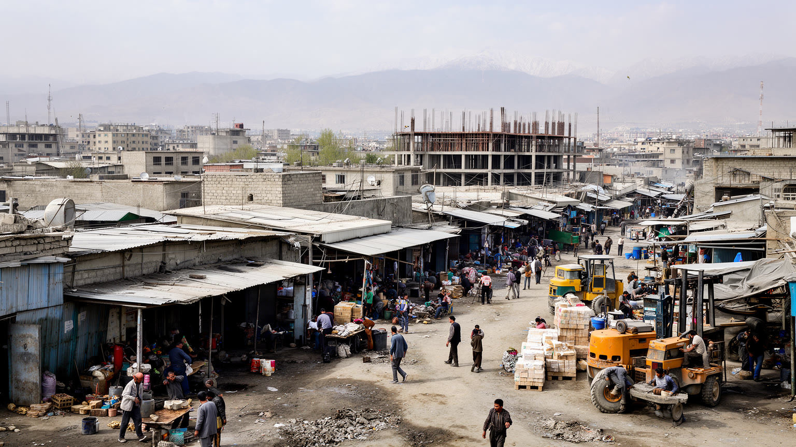
カブールの経済は、工業都市のような大規模生産より、行政、商業、建設、教育、医療、国際援助、輸送、通信、露店、小売、手工芸、家族経営の仕事で成り立ちます。援助資金と外国機関が多かった時期には、通訳、警備、運転手、事務、調査、ホテル、飲食、住宅賃貸が雇用を作りましたが、その縮小は都市の収入構造を大きく揺らしました。市場では食料、燃料、衣料、携帯電話、建材、輸入品、古着が売られ、価格は為替、国境、治安、天候に影響されます。安定した公務や専門職に届かない人は、日雇い、露店、配達、修理、親族の送金に頼ります。女性の教育と就労の制限は、家計だけでなく都市の専門性を削る深刻な焦点です。若者にとって仕事は収入だけでなく、国内に残るか、国外を目指すかを決める条件になります。カブールの労働を読むには、統計上のGDPより、朝に仕事を探す人、家で縫製する女性、学校を続けたい学生、燃料を運ぶ店主、送金を待つ家族を見る必要があります。都市の経済は制度の不安定さと家族の粘り強さの間で動いています。職を失った人は技能を別の商いへ移し、親族の店や露店で再出発することも多いです。雇用の不安は結婚、進学、住宅選びを遅らせ、都市の将来感覚を狭めています。小さな職の積み重ねを守れなければ、首都の人口は多くても生活の基盤は弱いまま残ります。働く権利は都市の安定そのものに関わります。
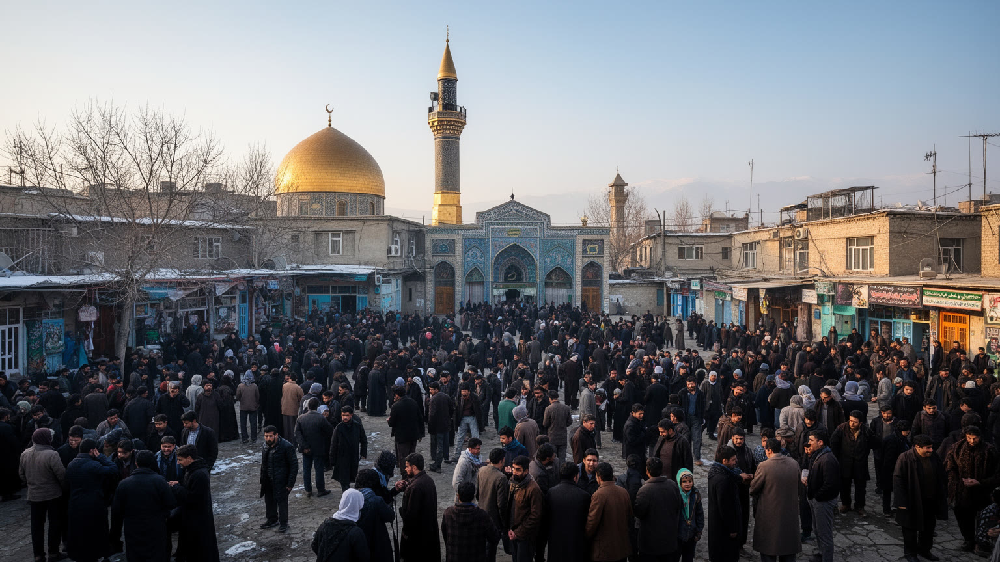
カブールの宗教生活は、モスクの礼拝、ラマダン、葬儀、慈善、家庭の祈り、聖者廟への参詣、近所の助け合いとして街に広がります。イスラムは政治制度や法の言葉として語られるだけでなく、食卓の時間、弔いの作法、貧しい人への施し、家族の名誉、商売の信用を支える生活の語彙です。カブールにはパシュトゥーン、タジク、ハザラ、ウズベクなど多様な民族と宗派の記憶があり、地区ごとの言語、食、音楽、祭礼、婚礼の習慣が都市の厚みを作ります。宗教は共同体を結ぶ力である一方、政治化されると教育、女性の行動、少数派の安全、表現の自由に強い影響を及ぼします。だから信仰を読むには、対立の見出しだけでなく、近所の葬儀を支える人、断食明けの食事を分ける家族、学校へ通いたい少女、移住で離れた親族を祈る母親の姿まで見る必要があります。共同体は国家が弱い時の安全網にもなりますが、外部者や少数者を排除する力になることもあります。カブールの宗教性は、祈りの深さと社会規範の重さが同じ場所に存在することにあります。市場の信用、婚礼の交渉、病人への見舞いも信仰と親族関係の中で動きます。都市の共存は、大きな理念よりも毎日の礼儀と相互扶助に支えられています。宗教施設は災害や貧困の時に相談の場所にもなります。そこに誰が入れるのか、誰が遠ざけられるのかを見ることが、共同体の包容力を測る手がかりになります。
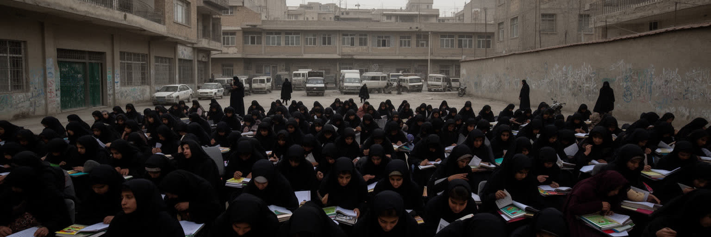
カブールの教育は、都市の未来を測る最も敏感な指標です。大学、学校、塾、図書館、語学教室、職業訓練は、若者が国内で働く道を探す場所であり、家族が貧困から抜け出す希望でもあります。長い戦争の中で教育は何度も中断され、校舎、教師、教材、安全な通学路が不足してきました。とくに女性と少女の教育・就労の制限は、個人の夢だけでなく、医療、教育、行政、企業、文化の人材基盤を弱めます。女性医師、教師、研究者、記者、起業家が働けなければ、都市全体のサービスも狭くなります。家庭では、娘を学ばせたい親、規範を恐れる親、国外進学を考える若者、オンラインで学び続ける学生が、それぞれ厳しい判断を迫られます。教育は学校の門の中だけで完結しません。通学の安全、交通費、服装規範、家族の収入、インターネット、停電、言語が学びの継続を左右します。カブールを読む時、政治の変化を最も具体的に映すのは、教室が開くか閉じるか、女性が働きに出られるか、若者が将来を語れるかです。学びの権利は都市の尊厳そのものに関わっています。教師の離職、教材不足、家庭内の負担は、静かに学力と意欲を削ります。教育が途切れるほど、都市は医療や行政を支える次の専門職も失っていきます。学び続ける場が残ることは、国外へ出る以外の未来を想像できる条件です。教室は都市の希望を最も具体的に支える場所です。
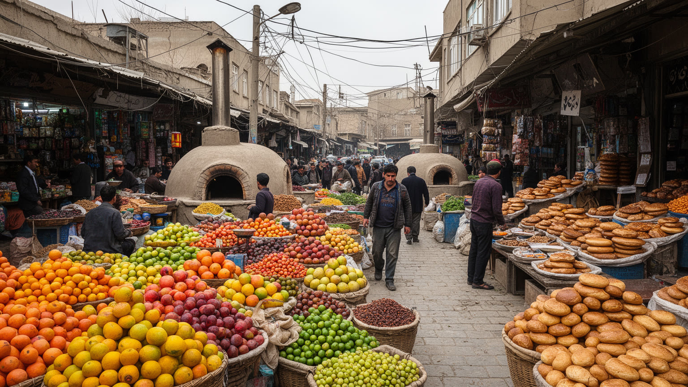
カブールの市場は、都市の経済と文化が最も濃く混ざる場所です。旧市街のバザール、衣料や香辛料の店、絨毯、金属細工、パン屋、茶店、両替商、携帯電話の修理店、燃料商が狭い通りに並び、国内の農村、パキスタン、イラン、中央アジア、湾岸からの商品と情報が交差します。食卓にはナン、カブリ・パラウ、豆や肉の煮込み、ヨーグルト、干果、緑茶があり、家庭の味は民族や地域の記憶を運びます。市場は買い物の場所であるだけでなく、求人、送金、政治の噂、家族の近況、結婚の相談が交わされる情報網でもあります。物価上昇や通貨の不安は、粉、油、燃料、茶の量として家庭に現れます。商人は国境閉鎖、治安、税、道路の状態に敏感で、物流が止まれば都市の台所がすぐに揺らぎます。観光客にとって市場は色彩のある名所に見えますが、住民にとっては生活費と信用を測る現場です。カブールの食と市場を読むことは、経済制裁や援助の数字を、家族の食卓と店先の値段へ翻訳することです。都市の生命力は、朝のパン、湯気の立つ茶、修理を待つ道具、値段交渉の声に残っています。店先の会話は、遠い州の収穫、国境の混雑、親族の送金をすぐに反映します。市場は都市の不安を受け止めながら、毎日の食事を守る実用的な公共空間でもあります。手工芸や修理の技術は、物を長く使う生活の知恵でもあります。市場を歩くことは、都市が外部世界と家庭を結ぶ回路を読むことでもあります。
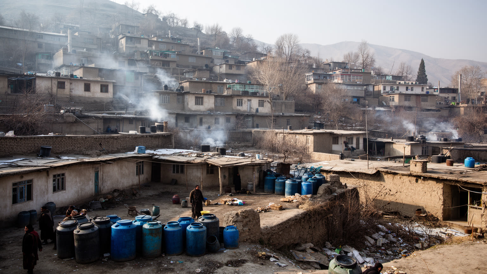
カブールの日常は、住宅、燃料、水、電力、通学、医療、家族の支えによって組み立てられます。人口増、国内避難、帰還者の流入、家賃上昇は、谷底と斜面に住宅を押し広げました。丘の上の家からは街を見下ろせますが、水を運ぶ負担、冬の燃料、道路の未舗装、救急車の到着、学校までの距離が生活を難しくします。低地の住宅地では、混雑、排水、衛生、家賃、隣家との近さが焦点になります。家族は収入を分け合い、親族の家に身を寄せ、国外からの送金や小さな商売で生活をつなぎます。冬の寒さは石炭や薪の費用を押し上げ、空気の汚れは子どもや高齢者の健康を傷つけます。安全な空き地があれば、子どもはサッカーやクリケットで短い余暇を作ります。女性の移動制限や治安への不安は、買い物、通院、学び、仕事の範囲を狭めます。近所の店、井戸、モスク、学校、診療所は、公共サービスが不十分な時の生活拠点になります。カブールの暮らしを読むには、国家政治の大きな変化だけでなく、朝の水くみ、屋根の修理、冬の暖房、子どもの宿題、家族で囲む食事を見る必要があります。都市の回復は、家の中で安心して眠れるかに表れます。住宅の不安定さは結婚、介護、学習にも影響し、家族の部屋割りや暖房の使い方まで変えます。小さな生活条件の積み重ねが、都市の安心を形作っています。家の近くに頼れる店や親族があることは、行政サービスの不足を補う安全網になります。暮らしの質は、部屋の広さだけでなく助けを呼べる距離でも決まります。
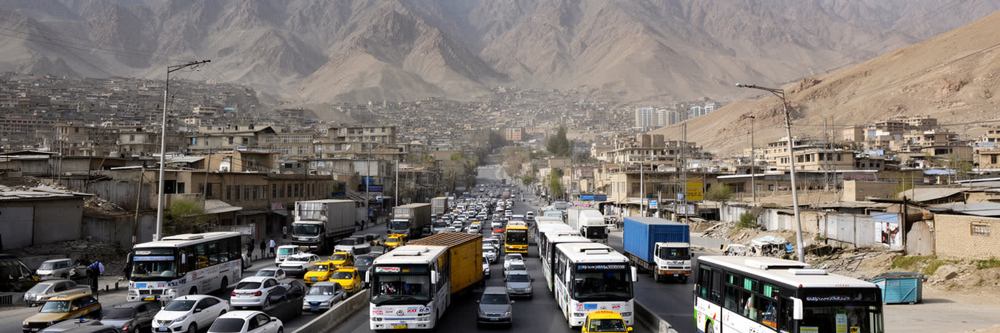
カブールの移動は、谷を通る幹線道路、山越えのルート、空港、乗り合いタクシー、バス、徒歩、検問によって成り立ちます。海を持たないアフガニスタンでは、道路と国境が物流の生命線であり、食料、燃料、建材、医薬品、衣料の価格は峠、税関、治安、隣国との関係に大きく左右されます。市内では人口増と車の増加に道路整備が追いつかず、渋滞、排気、交通事故、歩道の不足が日常の負担になります。狭い谷の都市では迂回路が限られ、道路封鎖や雪、事故が通勤、通学、救急搬送にすぐ響きます。空港は国外との接続を示す象徴ですが、出国を望む人の不安や離散家族の記憶も抱える場所です。交通は単なる便利さではありません。女性が安全に移動できるか、子どもが学校へ通えるか、商人が市場へ商品を運べるか、病人が診療所へ届くかを決める社会的な条件です。カブールの物流を読むには、街中の渋滞だけでなく、山道を走るトラック、国境で待つ荷物、燃料価格、検問を通る小商人まで見る必要があります。移動の不安定さは、都市の経済と暮らしを常に揺らしています。歩道や横断の不足は、高齢者や子どもに特に重いです。道路を整えることは商業政策であると同時に、教育、医療、家族の時間を守る政策でもあります。公共交通が弱いほど、家計は運賃や車への依存に縛られます。移動の公平さは、都市の機会をどれだけ広げられるかを決めます。
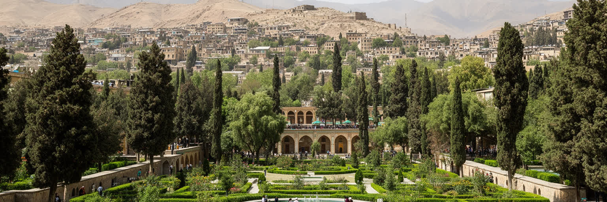
カブールの遺産は、王宮や博物館だけでなく、庭園、詩、音楽、工芸、古い街路、丘の墓地、家庭の記憶に広がります。バーブル庭園は、ムガル世界と中央アジア的な庭園文化を感じさせる場所であり、戦争で傷ついた都市が緑と水路を通じて静けさを取り戻す象徴でもあります。国立博物館や歴史的建築は、盗難、破壊、修復の経験を持ち、遺産を守ることがどれほど政治と治安に左右されるかを示してきました。カブールは古代交易路、イスラム王朝、ペルシア語文化、パシュトゥー語文化、近代化の試みが重なる都市であり、単一の民族や時代だけでは説明できません。観光は制約を抱えますが、庭園、山の眺望、古い市場、博物館、工芸は、外から来る人に都市の別の顔を見せます。ブズカシの記憶やスポーツの応援も、都市と地方を結ぶ文化の一部です。遺産を読む時、石や展示品だけでなく、それを守る学芸員、職人、庭師、案内人、周辺住民の仕事を見る必要があります。破壊を経験した都市で遺産が残る意味は、過去の美しさを誇ることだけではありません。人びとが自分の都市を再び信じるための足場を保つことでもあります。庭園で休む家族や、古い工芸を学ぶ若者の存在は、遺産が生活の中で使われて初めて残ることを示します。保存は観光のためだけでなく、都市の記憶を住民へ返す営みでもあります。修復が続く場所には、失われた時間を取り戻す静かな意志があります。遺産は過去の飾りではなく、未来へ都市をつなぐ実用的な記憶です。